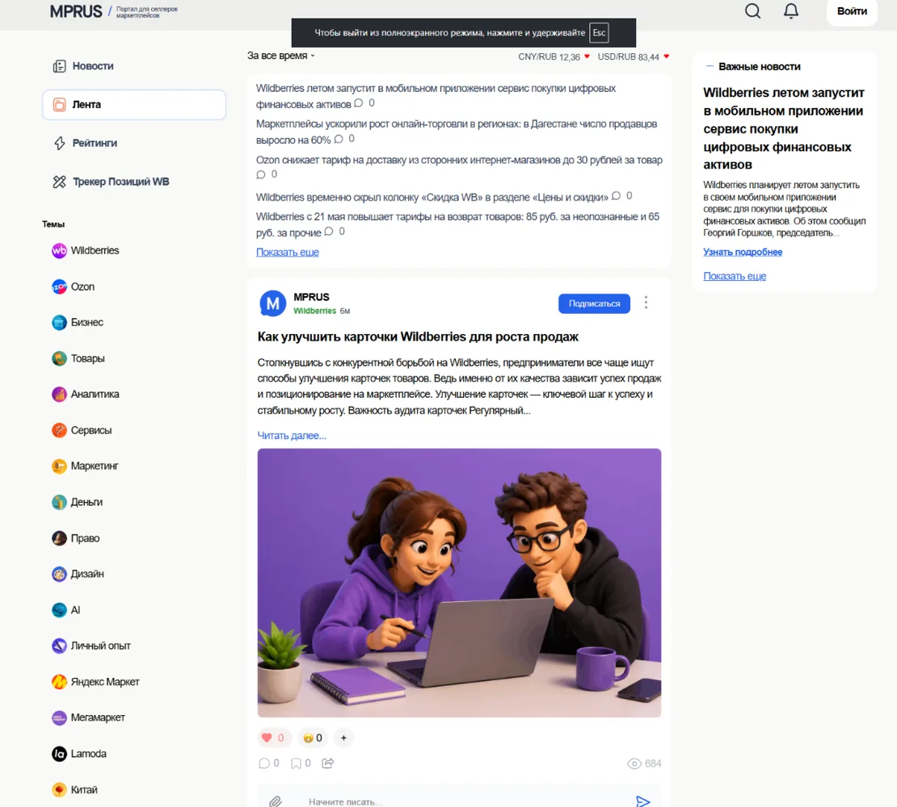

PHP · JavaScript · WordPress · MySQL · HTML · SCSS
Momspace / MPRUS / Aurora Transaxnikita / Zonov Nikita
Full-stack WEB developer.
PHP / JavaScript / WordPress.
Коммерческая разработка с 2020: самописные сайты, WordPress, REST API, SPA, legacy и внутренние инструменты. GameDev и modding — отдельное направление.
- axnikita
- Zonov Nikita
- Full-stack WEB
- Commercial since 2020
WEB / production / GameDev
Разрабатываю и дорабатываю коммерческие WEB-проекты: PHP, JavaScript, WordPress, API и frontend.
Momspace: тема с нуля, SPA/domLoader и запуск в production. MPRUS: собственный API, nonce, weighted rate limiter и InfiniteLoader для Post/User/Term/Comment.
В production/legacy работал с внутренними инструментами call center, платежными страницами, API доставки и оплаты. В «Сибирском Доме» исправлял адаптив, JavaScript и добавлял новые блоки в чужую WordPress-тему.
GameDev веду параллельно: Uranium для Mindustry, KazAXLibers для 7 Days to Die, C++/C#/Unity и собственные инструменты для генерации и балансировки контента.
Основной стекPHP · JavaScript · WordPress · MySQL
WEBREST API · SPA · legacy · integrations
GameDevC++ · C# · Unity · JS modding · tooling
REST API · SPA · axLoader · domLoader · InfiniteLoader · Cache
API / dynamic UI / loadersRedis · KeyDB · Gearman · Cron · Apache · Nginx · Payments
legacy / delivery / integrationsC++ · C# · Unity · JS modding · XML · JSON · PHP tooling
Uranium / KazAXLibersОпыт / проекты
2018 → 2026.
WEB + GameDev.
Коммерческая разработка с 2020. До этого — первые собственные проекты; GameDev и modding идут параллельно.
-
GameDev
Heroes of Danger
C++ roguelike: процедурные комнаты, бои, инвентарь, NPC и сохранения. Первый законченный игровой проект; логика была построена на функциях и крупных switch/case.
-
WEB
Guitar Songbook
PHP + Vanilla JS: поиск, парсер аккордов, генерация аппликатур, темы и автоскролл. Контент подхватывался из файловой структуры.
-
WEB / GAME
Kwork · AxNikita · Uranium
Коммерческие сайты, messenger на WebSocket, собственные PHP/JS-библиотеки. Параллельно — Uranium для Mindustry с модульными механиками и генераторами контента.
-
Production
Call center / Web commerce
Один большой PHP 7.4 legacy-проект: инструменты для операторов, калькуляторы, таблицы, платежные страницы, API доставки и оплаты.
-
GameDev
KazAXLibers
PHP build-pipeline для 7 Days to Die: JSON/XML-конфиги, генерация мода, расчёт Power/Profit, тиры, XLSX-таблицы и генерация вариантов иконок.
-
WEB
MamaMind / Momspace · Aurora Trans
Momspace — тема с нуля, SPA/domLoader и production. Aurora Trans — child theme, калькулятор доставки, формы и интеграция с внешним tracking.
-
WEB
MPRUS
Платформа для селлеров: новости, профили, рейтинги, реакции, уведомления, свой API, nonce, weighted rate limiter и InfiniteLoader для Post/User/Term/Comment.
-
WEB
Сибирский Дом
Доработка чужой WordPress-темы: адаптив, исправление JavaScript, Rutube/Fancybox, дополнительные блоки и SEO-страницы под требования заказчика.
MPRUS / Momspace / Uranium / KazAXLibers
Проекты,
которые
работают.
WEB / WORDPRESS / API
GAMEDEV / MODDING
2018—2026
Основные кейсы: MPRUS, Momspace, Aurora Trans, Сибирский Дом, Uranium и KazAXLibers.

MPRUS
Инфопортал для селлеров маркетплейсов: новости, рейтинги, реакции, профили и собственный API.
WEB
Momspace · MPRUS · Aurora Trans · Сибирский Дом
GAME
Heroes of Danger · Uranium · KazAXLibers · другие моды
CODE
GitHub / ax-nikita